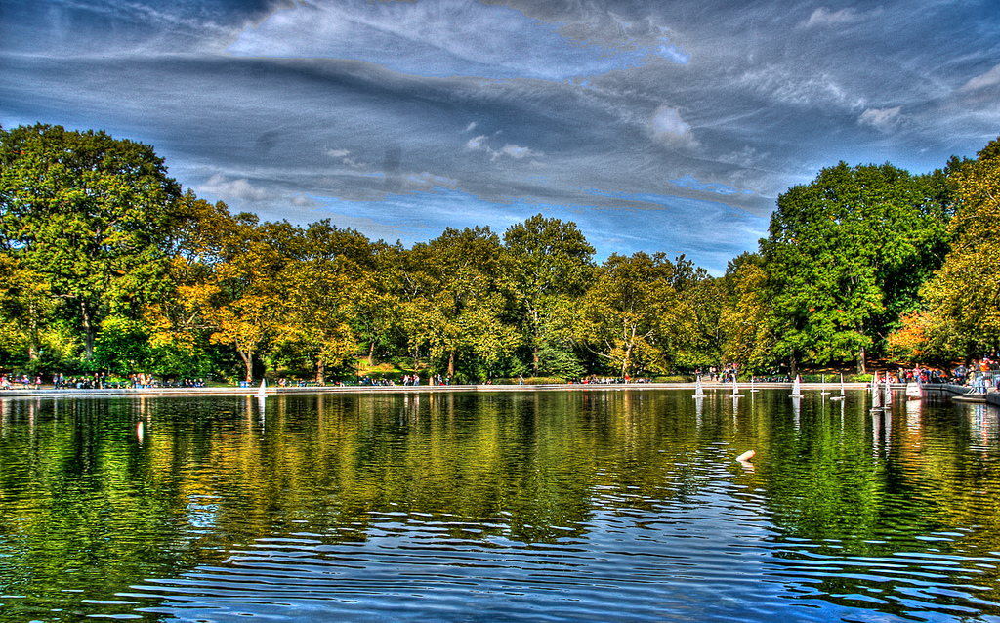

Conservatory Pond in Central Park
This photo of Conservatory Pond in Central Park in New York City was taken on October 22,2016 with a Canon EOS 30D camera.


RELATED PHOTOS


REVIEWS
By Ricardo on |
2016-05-23 |
Easy on the HDR buddy.
By Susan on |
2016-11-18 |
I love Central Park.